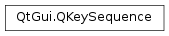

QKeySequence¶
Synopsis¶
Functions¶
Static functions¶
- def
fromString(str[, format=PortableText]) - def
keyBindings(key) - def
listFromString(str[, format=PortableText]) - def
listToString(list[, format=PortableText]) - def
mnemonic(text)
Detailed Description¶
The
PySide2.QtGui.QKeySequenceclass encapsulates a key sequence as used by shortcuts.In its most common form, a key sequence describes a combination of keys that must be used together to perform some action. Key sequences are used with
PySide2.QtWidgets.QActionobjects to specify which keyboard shortcuts can be used to trigger actions.Key sequences can be constructed for use as keyboard shortcuts in three different ways:
- For standard shortcuts, a
standard keycan be used to request the platform-specific key sequence associated with each shortcut.- For custom shortcuts, human-readable strings such as “Ctrl+X” can be used, and these can be translated into the appropriate shortcuts for users of different languages. Translations are made in the ”
PySide2.QtWidgets.QShortcut” context.- For hard-coded shortcuts, integer key codes can be specified with a combination of values defined by the
Qt.KeyandQt.Modifierenum values. Each key code consists of a singleQt.Keyvalue and zero or more modifiers, such asQt.SHIFT,Qt.CTRL,Qt.ALTandQt.META.For example, Ctrl P might be a sequence used as a shortcut for printing a document, and can be specified in any of the following ways:
QKeySequence(QKeySequence.Print) QKeySequence(tr("Ctrl+P")) QKeySequence(tr("Ctrl+p")) QKeySequence(Qt.CTRL + Qt.Key_P)Note that, for letters, the case used in the specification string does not matter. In the above examples, the user does not need to hold down the Shift key to activate a shortcut specified with “Ctrl+P”. However, for other keys, the use of Shift as an unspecified extra modifier key can lead to confusion for users of an application whose keyboards have different layouts to those used by the developers. See the
Keyboard Layout Issuessection below for more details.It is preferable to use standard shortcuts where possible. When creating key sequences for non-standard shortcuts, you should use human-readable strings in preference to hard-coded integer values.
PySide2.QtGui.QKeySequenceobjects can be cast to aPySide2.QtCore.QStringto obtain a human-readable translated version of the sequence. Similarly, thePySide2.QtGui.QKeySequence.toString()function produces human-readable strings for use in menus. On macOS , the appropriate symbols are used to describe keyboard shortcuts using special keys on the Macintosh keyboard.An alternative way to specify hard-coded key codes is to use the Unicode code point of the character; for example, ‘A’ gives the same key sequence as
Qt.Key_A.Note
On macOS , references to “Ctrl”,
Qt.CTRL,Qt.Key_ControlandQt.ControlModifiercorrespond to the Command keys on the Macintosh keyboard, and references to “Meta”,Qt.META,Qt.Key_MetaandQt.MetaModifiercorrespond to the Control keys. Developers on macOS can use the same shortcut descriptions across all platforms, and their applications will automatically work as expected on macOS .
Standard Shortcuts¶
PySide2.QtGui.QKeySequencedefines manystandard keyboard shortcutsto reduce the amount of effort required when setting up actions in a typical application. The table below shows some common key sequences that are often used for these standard shortcuts by applications on four widely-used platforms. Note that on macOS , the Ctrl value corresponds to the Command keys on the Macintosh keyboard, and the Meta value corresponds to the Control keys.
QKeySequence.StandardKeyWindows macOS KDE Plasma GNOME HelpContentsF1 Ctrl+? F1 F1 WhatsThisShift+F1 Shift+F1 Shift+F1 Shift+F1 Open Ctrl+O Ctrl+O Ctrl+O Ctrl+O Close Ctrl+F4, Ctrl+W Ctrl+W, Ctrl+F4 Ctrl+W Ctrl+W Save Ctrl+S Ctrl+S Ctrl+S Ctrl+S Quit Ctrl+Q Ctrl+Q Ctrl+Q SaveAsCtrl+Shift+S Ctrl+Shift+S New Ctrl+N Ctrl+N Ctrl+N Ctrl+N Delete Del Del, Meta+D Del, Ctrl+D Del, Ctrl+D Cut Ctrl+X, Shift+Del Ctrl+X, Meta+K Ctrl+X, F20, Shift+Del Ctrl+X, F20, Shift+Del Copy Ctrl+C, Ctrl+Ins Ctrl+C Ctrl+C, F16, Ctrl+Ins Ctrl+C, F16, Ctrl+Ins Paste Ctrl+V, Shift+Ins Ctrl+V, Meta+Y Ctrl+V, F18, Shift+Ins Ctrl+V, F18, Shift+Ins Preferences Ctrl+, Undo Ctrl+Z, Alt+Backspace Ctrl+Z Ctrl+Z, F14 Ctrl+Z, F14 Redo Ctrl+Y, Shift+Ctrl+Z, Alt+Shift+Backspace Ctrl+Shift+Z Ctrl+Shift+Z Ctrl+Shift+Z Back Alt+Left, Backspace Ctrl+[ Alt+Left Alt+Left Forward Alt+Right, Shift+Backspace Ctrl+] Alt+Right Alt+Right Refresh F5 F5 F5 Ctrl+R, F5 ZoomInCtrl+Plus Ctrl+Plus Ctrl+Plus Ctrl+Plus ZoomOutCtrl+Minus Ctrl+Minus Ctrl+Minus Ctrl+Minus FullScreenF11, Alt+Enter Ctrl+Meta+F F11, Ctrl+Shift+F Ctrl+F11 Ctrl+P Ctrl+P Ctrl+P Ctrl+P AddTabCtrl+T Ctrl+T Ctrl+Shift+N, Ctrl+T Ctrl+T NextChildCtrl+Tab, Forward, Ctrl+F6 Ctrl+}, Forward, Ctrl+Tab Ctrl+Tab, Forward, Ctrl+Comma Ctrl+Tab, Forward PreviousChildCtrl+Shift+Tab, Back, Ctrl+Shift+F6 Ctrl+{, Back, Ctrl+Shift+Tab Ctrl+Shift+Tab, Back, Ctrl+Period Ctrl+Shift+Tab, Back Find Ctrl+F Ctrl+F Ctrl+F Ctrl+F FindNextF3, Ctrl+G Ctrl+G F3 Ctrl+G, F3 FindPreviousShift+F3, Ctrl+Shift+G Ctrl+Shift+G Shift+F3 Ctrl+Shift+G, Shift+F3 Replace Ctrl+H (none) Ctrl+R Ctrl+H SelectAllCtrl+A Ctrl+A Ctrl+A Ctrl+A Deselect Ctrl+Shift+A Ctrl+Shift+A Bold Ctrl+B Ctrl+B Ctrl+B Ctrl+B Italic Ctrl+I Ctrl+I Ctrl+I Ctrl+I Underline Ctrl+U Ctrl+U Ctrl+U Ctrl+U MoveToNextCharRight Right, Meta+F Right Right MoveToPreviousCharLeft Left, Meta+B Left Left MoveToNextWordCtrl+Right Alt+Right Ctrl+Right Ctrl+Right MoveToPreviousWordCtrl+Left Alt+Left Ctrl+Left Ctrl+Left MoveToNextLineDown Down, Meta+N Down Down MoveToPreviousLineUp Up, Meta+P Up Up MoveToNextPagePgDown PgDown, Alt+PgDown, Meta+Down, Meta+PgDown, Meta+V PgDown PgDown MoveToPreviousPagePgUp PgUp, Alt+PgUp, Meta+Up, Meta+PgUp PgUp PgUp MoveToStartOfLineHome Ctrl+Left, Meta+Left Home Home MoveToEndOfLineEnd Ctrl+Right, Meta+Right End, Ctrl+E End, Ctrl+E MoveToStartOfBlock(none) Alt+Up, Meta+A (none) (none) MoveToEndOfBlock(none) Alt+Down, Meta+E (none) (none) MoveToStartOfDocumentCtrl+Home Ctrl+Up, Home Ctrl+Home Ctrl+Home MoveToEndOfDocumentCtrl+End Ctrl+Down, End Ctrl+End Ctrl+End SelectNextCharShift+Right Shift+Right Shift+Right Shift+Right SelectPreviousCharShift+Left Shift+Left Shift+Left Shift+Left SelectNextWordCtrl+Shift+Right Alt+Shift+Right Ctrl+Shift+Right Ctrl+Shift+Right SelectPreviousWordCtrl+Shift+Left Alt+Shift+Left Ctrl+Shift+Left Ctrl+Shift+Left SelectNextLineShift+Down Shift+Down Shift+Down Shift+Down SelectPreviousLineShift+Up Shift+Up Shift+Up Shift+Up SelectNextPageShift+PgDown Shift+PgDown Shift+PgDown Shift+PgDown SelectPreviousPageShift+PgUp Shift+PgUp Shift+PgUp Shift+PgUp SelectStartOfLineShift+Home Ctrl+Shift+Left Shift+Home Shift+Home SelectEndOfLineShift+End Ctrl+Shift+Right Shift+End Shift+End SelectStartOfBlock(none) Alt+Shift+Up, Meta+Shift+A (none) (none) SelectEndOfBlock(none) Alt+Shift+Down, Meta+Shift+E (none) (none) SelectStartOfDocumentCtrl+Shift+Home Ctrl+Shift+Up, Shift+Home Ctrl+Shift+Home Ctrl+Shift+Home SelectEndOfDocumentCtrl+Shift+End Ctrl+Shift+Down, Shift+End Ctrl+Shift+End Ctrl+Shift+End DeleteStartOfWordCtrl+Backspace Alt+Backspace Ctrl+Backspace Ctrl+Backspace DeleteEndOfWordCtrl+Del (none) Ctrl+Del Ctrl+Del DeleteEndOfLine(none) (none) Ctrl+K Ctrl+K DeleteCompleteLine(none) (none) Ctrl+U Ctrl+U InsertParagraphSeparatorEnter Enter Enter Enter InsertLineSeparatorShift+Enter Meta+Enter, Meta+O Shift+Enter Shift+Enter Backspace (none) Meta+H (none) (none) Cancel Escape Escape, Ctrl+. Escape Escape Note that, since the key sequences used for the standard shortcuts differ between platforms, you still need to test your shortcuts on each platform to ensure that you do not unintentionally assign the same key sequence to many actions.
Keyboard Layout Issues¶
Many key sequence specifications are chosen by developers based on the layout of certain types of keyboard, rather than choosing keys that represent the first letter of an action’s name, such as Ctrl S (“Ctrl+S”) or Ctrl C (“Ctrl+C”). Additionally, because certain symbols can only be entered with the help of modifier keys on certain keyboard layouts, key sequences intended for use with one keyboard layout may map to a different key, map to no keys at all, or require an additional modifier key to be used on different keyboard layouts.
For example, the shortcuts, Ctrl plus and Ctrl minus, are often used as shortcuts for zoom operations in graphics applications, and these may be specified as “Ctrl++” and “Ctrl+-” respectively. However, the way these shortcuts are specified and interpreted depends on the keyboard layout. Users of Norwegian keyboards will note that the + and - keys are not adjacent on the keyboard, but will still be able to activate both shortcuts without needing to press the Shift key. However, users with British keyboards will need to hold down the Shift key to enter the + symbol, making the shortcut effectively the same as “Ctrl+Shift+=”.
Although some developers might resort to fully specifying all the modifiers they use on their keyboards to activate a shortcut, this will also result in unexpected behavior for users of different keyboard layouts.
For example, a developer using a British keyboard may decide to specify “Ctrl+Shift+=” as the key sequence in order to create a shortcut that coincidentally behaves in the same way as Ctrl plus. However, the = key needs to be accessed using the Shift key on Norwegian keyboard, making the required shortcut effectively Ctrl Shift Shift = (an impossible key combination).
As a result, both human-readable strings and hard-coded key codes can both be problematic to use when specifying a key sequence that can be used on a variety of different keyboard layouts. Only the use of
standard shortcutsguarantees that the user will be able to use the shortcuts that the developer intended.Despite this, we can address this issue by ensuring that human-readable strings are used, making it possible for translations of key sequences to be made for users of different languages. This approach will be successful for users whose keyboards have the most typical layout for the language they are using.
GNU Emacs Style Key Sequences¶
Key sequences similar to those used in GNU Emacs, allowing up to four key codes, can be created by using the multiple argument constructor, or by passing a human-readable string of comma-separated key sequences.
For example, the key sequence, Ctrl X followed by Ctrl C, can be specified using either of the following ways:
QKeySequence(tr("Ctrl+X, Ctrl+C")) QKeySequence(Qt.CTRL + Qt.Key_X, Qt.CTRL + Qt.Key_C)Warning
A
PySide2.QtWidgets.QApplicationinstance must have been constructed before aPySide2.QtGui.QKeySequenceis created; otherwise, your application may crash.See also
-
class
PySide2.QtGui.QKeySequence¶ -
class
PySide2.QtGui.QKeySequence(key) -
class
PySide2.QtGui.QKeySequence(ks) -
class
PySide2.QtGui.QKeySequence(key[, format=NativeText]) -
class
PySide2.QtGui.QKeySequence(k1[, k2=0[, k3=0[, k4=0]]]) Parameters: - k3 –
PySide2.QtCore.int - format –
PySide2.QtGui.QKeySequence.SequenceFormat - k4 –
PySide2.QtCore.int - k2 –
PySide2.QtCore.int - ks –
PySide2.QtGui.QKeySequence - key –
PySide2.QtGui.QKeySequence.StandardKey - k1 –
PySide2.QtCore.int
Constructs an empty key sequence.
Constructs a
PySide2.QtGui.QKeySequenceobject for the givenkey. The result will depend on the currently running platform.The resulting object will be based on the first element in the list of key bindings for the
key.Copy constructor. Makes a copy of
keysequence.Creates a key sequence from the
keystring, based onformat.For example “Ctrl+O” gives CTRL+’O’. The strings “Ctrl”, “Shift”, “Alt” and “Meta” are recognized, as well as their translated equivalents in the ”
PySide2.QtWidgets.QShortcut” context (usingQObject.tr()).Up to four key codes may be entered by separating them with commas, e.g. “Alt+X,Ctrl+S,Q”.
This constructor is typically used with
PySide2.QtCore.QObject.tr()(), so that shortcut keys can be replaced in translations:file = QMenu(self) file.addAction(tr("&Open..."), self, SLOT("open()"), QKeySequence(tr("Ctrl+O", "File|Open")))
Note the “File|Open” translator comment. It is by no means necessary, but it provides some context for the human translator.
Constructs a key sequence with up to 4 keys
k1,k2,k3andk4.The key codes are listed in
Qt.Keyand can be combined with modifiers (seeQt.Modifier) such asQt.SHIFT,Qt.CTRL,Qt.ALT, orQt.META.- k3 –
-
PySide2.QtGui.QKeySequence.StandardKey¶ This enum represent standard key bindings. They can be used to assign platform dependent keyboard shortcuts to a
PySide2.QtWidgets.QAction.Note that the key bindings are platform dependent. The currently bound shortcuts can be queried using
PySide2.QtGui.QKeySequence.keyBindings().Constant Description QKeySequence.AddTab Add new tab. QKeySequence.Back Navigate back. QKeySequence.Backspace Delete previous character. QKeySequence.Bold Bold text. QKeySequence.Close Close document/tab. QKeySequence.Copy Copy. QKeySequence.Cut Cut. QKeySequence.Delete Delete. QKeySequence.DeleteEndOfLine Delete end of line. QKeySequence.DeleteEndOfWord Delete word from the end of the cursor. QKeySequence.DeleteStartOfWord Delete the beginning of a word up to the cursor. QKeySequence.DeleteCompleteLine Delete the entire line. QKeySequence.Find Find in document. QKeySequence.FindNext Find next result. QKeySequence.FindPrevious Find previous result. QKeySequence.Forward Navigate forward. QKeySequence.HelpContents Open help contents. QKeySequence.InsertLineSeparator Insert a new line. QKeySequence.InsertParagraphSeparator Insert a new paragraph. QKeySequence.Italic Italic text. QKeySequence.MoveToEndOfBlock Move cursor to end of block. This shortcut is only used on the macOS . QKeySequence.MoveToEndOfDocument Move cursor to end of document. QKeySequence.MoveToEndOfLine Move cursor to end of line. QKeySequence.MoveToNextChar Move cursor to next character. QKeySequence.MoveToNextLine Move cursor to next line. QKeySequence.MoveToNextPage Move cursor to next page. QKeySequence.MoveToNextWord Move cursor to next word. QKeySequence.MoveToPreviousChar Move cursor to previous character. QKeySequence.MoveToPreviousLine Move cursor to previous line. QKeySequence.MoveToPreviousPage Move cursor to previous page. QKeySequence.MoveToPreviousWord Move cursor to previous word. QKeySequence.MoveToStartOfBlock Move cursor to start of a block. This shortcut is only used on macOS . QKeySequence.MoveToStartOfDocument Move cursor to start of document. QKeySequence.MoveToStartOfLine Move cursor to start of line. QKeySequence.New Create new document. QKeySequence.NextChild Navigate to next tab or child window. QKeySequence.Open Open document. QKeySequence.Paste Paste. QKeySequence.Preferences Open the preferences dialog. QKeySequence.PreviousChild Navigate to previous tab or child window. QKeySequence.Print Print document. QKeySequence.Quit Quit the application. QKeySequence.Redo Redo. QKeySequence.Refresh Refresh or reload current document. QKeySequence.Replace Find and replace. QKeySequence.SaveAs Save document after prompting the user for a file name. QKeySequence.Save Save document. QKeySequence.SelectAll Select all text. QKeySequence.Deselect Deselect text. Since 5.1 QKeySequence.SelectEndOfBlock Extend selection to the end of a text block. This shortcut is only used on macOS . QKeySequence.SelectEndOfDocument Extend selection to end of document. QKeySequence.SelectEndOfLine Extend selection to end of line. QKeySequence.SelectNextChar Extend selection to next character. QKeySequence.SelectNextLine Extend selection to next line. QKeySequence.SelectNextPage Extend selection to next page. QKeySequence.SelectNextWord Extend selection to next word. QKeySequence.SelectPreviousChar Extend selection to previous character. QKeySequence.SelectPreviousLine Extend selection to previous line. QKeySequence.SelectPreviousPage Extend selection to previous page. QKeySequence.SelectPreviousWord Extend selection to previous word. QKeySequence.SelectStartOfBlock Extend selection to the start of a text block. This shortcut is only used on macOS . QKeySequence.SelectStartOfDocument Extend selection to start of document. QKeySequence.SelectStartOfLine Extend selection to start of line. QKeySequence.Underline Underline text. QKeySequence.Undo Undo. QKeySequence.UnknownKey Unbound key. QKeySequence.WhatsThis Activate “what’s this”. QKeySequence.ZoomIn Zoom in. QKeySequence.ZoomOut Zoom out. QKeySequence.FullScreen Toggle the window state to/from full screen. QKeySequence.Cancel Cancel the current operation.
-
PySide2.QtGui.QKeySequence.SequenceFormat¶ Constant Description QKeySequence.NativeText The key sequence as a platform specific string. This means that it will be shown translated and on the Mac it will resemble a key sequence from the menu bar. This enum is best used when you want to display the string to the user. QKeySequence.PortableText The key sequence is given in a “portable” format, suitable for reading and writing to a file. In many cases, it will look similar to the native text on Windows and X11.
-
PySide2.QtGui.QKeySequence.SequenceMatch¶ Constant Description QKeySequence.NoMatch The key sequences are different; not even partially matching. QKeySequence.PartialMatch The key sequences match partially, but are not the same. QKeySequence.ExactMatch The key sequences are the same.
-
PySide2.QtGui.QKeySequence.__getitem__()¶
-
PySide2.QtGui.QKeySequence.__reduce__()¶ Return type: PyObject
-
PySide2.QtGui.QKeySequence.__repr__()¶ Return type: PyObject
-
PySide2.QtGui.QKeySequence.count()¶ Return type: PySide2.QtCore.intReturns the number of keys in the key sequence. The maximum is 4.
-
static
PySide2.QtGui.QKeySequence.fromString(str[, format=PortableText])¶ Parameters: - str – unicode
- format –
PySide2.QtGui.QKeySequence.SequenceFormat
Return type: Return a
PySide2.QtGui.QKeySequencefrom the stringstrbased onformat.
-
PySide2.QtGui.QKeySequence.isEmpty()¶ Return type: PySide2.QtCore.boolReturns
trueif the key sequence is empty; otherwise returns false.
-
static
PySide2.QtGui.QKeySequence.keyBindings(key)¶ Parameters: key – PySide2.QtGui.QKeySequence.StandardKeyReturn type: Returns a list of key bindings for the given
key. The result of calling this function will vary based on the target platform. The first element of the list indicates the primary shortcut for the given platform. If the result contains more than one result, these can be considered alternative shortcuts on the same platform for the givenkey.
-
static
PySide2.QtGui.QKeySequence.listFromString(str[, format=PortableText])¶ Parameters: - str – unicode
- format –
PySide2.QtGui.QKeySequence.SequenceFormat
Return type: Return a list of
PySide2.QtGui.QKeySequencefrom the stringstrbased onformat.
-
static
PySide2.QtGui.QKeySequence.listToString(list[, format=PortableText])¶ Parameters: - list –
- format –
PySide2.QtGui.QKeySequence.SequenceFormat
Return type: unicode
Return a string representation of
listbased onformat.
-
PySide2.QtGui.QKeySequence.matches(seq)¶ Parameters: seq – PySide2.QtGui.QKeySequenceReturn type: PySide2.QtGui.QKeySequence.SequenceMatchMatches the sequence with
seq. ReturnsExactMatchif successful,PartialMatchifseqmatches incompletely, andNoMatchif the sequences have nothing in common. ReturnsNoMatchifseqis shorter.
-
static
PySide2.QtGui.QKeySequence.mnemonic(text)¶ Parameters: text – unicode Return type: PySide2.QtGui.QKeySequenceReturns the shortcut key sequence for the mnemonic in
text, or an empty key sequence if no mnemonics are found.For example, mnemonic(“E&xit”) returns
Qt::ALT+Qt::Key_X, mnemonic(“&Quit”) returnsALT+Key_Q, and mnemonic(“Quit”) returns an emptyPySide2.QtGui.QKeySequence.We provide a list of common mnemonics in English. At the time of writing, Microsoft and Open Group do not appear to have issued equivalent recommendations for other languages.
-
PySide2.QtGui.QKeySequence.__ne__(other)¶ Parameters: other – PySide2.QtGui.QKeySequenceReturn type: PySide2.QtCore.boolReturns
trueif this key sequence is not equal to theotherkey sequence; otherwise returnsfalse.
-
PySide2.QtGui.QKeySequence.__lt__(ks)¶ Parameters: ks – PySide2.QtGui.QKeySequenceReturn type: PySide2.QtCore.boolProvides an arbitrary comparison of this key sequence and
otherkey sequence. All that is guaranteed is that the operator returnsfalseif both key sequences are equal and that (ks1 < ks2) == !( ks2 < ks1) if the key sequences are not equal.This function is useful in some circumstances, for example if you want to use
PySide2.QtGui.QKeySequenceobjects as keys in aQMap.See also
PySide2.QtGui.QKeySequence.operator==()PySide2.QtGui.QKeySequence.operator!=()PySide2.QtGui.QKeySequence.operator>()PySide2.QtGui.QKeySequence.operator<=()PySide2.QtGui.QKeySequence.operator>=()
-
PySide2.QtGui.QKeySequence.__le__(other)¶ Parameters: other – PySide2.QtGui.QKeySequenceReturn type: PySide2.QtCore.boolReturns
trueif this key sequence is smaller or equal to theotherkey sequence; otherwise returnsfalse.See also
PySide2.QtGui.QKeySequence.operator==()PySide2.QtGui.QKeySequence.operator!=()PySide2.QtGui.QKeySequence.operator<()PySide2.QtGui.QKeySequence.operator>()PySide2.QtGui.QKeySequence.operator>=()
-
PySide2.QtGui.QKeySequence.__eq__(other)¶ Parameters: other – PySide2.QtGui.QKeySequenceReturn type: PySide2.QtCore.boolReturns
trueif this key sequence is equal to theotherkey sequence; otherwise returnsfalse.
-
PySide2.QtGui.QKeySequence.__gt__(other)¶ Parameters: other – PySide2.QtGui.QKeySequenceReturn type: PySide2.QtCore.boolReturns
trueif this key sequence is larger than theotherkey sequence; otherwise returnsfalse.See also
PySide2.QtGui.QKeySequence.operator==()PySide2.QtGui.QKeySequence.operator!=()PySide2.QtGui.QKeySequence.operator<()PySide2.QtGui.QKeySequence.operator<=()PySide2.QtGui.QKeySequence.operator>=()
-
PySide2.QtGui.QKeySequence.__ge__(other)¶ Parameters: other – PySide2.QtGui.QKeySequenceReturn type: PySide2.QtCore.boolReturns
trueif this key sequence is larger or equal to theotherkey sequence; otherwise returnsfalse.See also
PySide2.QtGui.QKeySequence.operator==()PySide2.QtGui.QKeySequence.operator!=()PySide2.QtGui.QKeySequence.operator<()PySide2.QtGui.QKeySequence.operator>()PySide2.QtGui.QKeySequence.operator<=()
-
PySide2.QtGui.QKeySequence.swap(other)¶ Parameters: other – PySide2.QtGui.QKeySequenceSwaps key sequence
otherwith this key sequence. This operation is very fast and never fails.
-
PySide2.QtGui.QKeySequence.toString([format=PortableText])¶ Parameters: format – PySide2.QtGui.QKeySequence.SequenceFormatReturn type: unicode Return a string representation of the key sequence, based on
format.For example, the value
Qt.CTRL+Qt.Key_Oresults in “Ctrl+O”. If the key sequence has multiple key codes, each is separated by commas in the string returned, such as “Alt+X, Ctrl+Y, Z”. The strings, “Ctrl”, “Shift”, etc. are translated usingQObject.tr()in the ”PySide2.QtWidgets.QShortcut” context.If the key sequence has no keys, an empty string is returned.
On macOS , the string returned resembles the sequence that is shown in the menu bar if
formatisQKeySequence.NativeText; otherwise, the string uses the “portable” format, suitable for writing to a file.
© 2018 The Qt Company Ltd. Documentation contributions included herein are the copyrights of their respective owners. The documentation provided herein is licensed under the terms of the GNU Free Documentation License version 1.3 as published by the Free Software Foundation. Qt and respective logos are trademarks of The Qt Company Ltd. in Finland and/or other countries worldwide. All other trademarks are property of their respective owners.